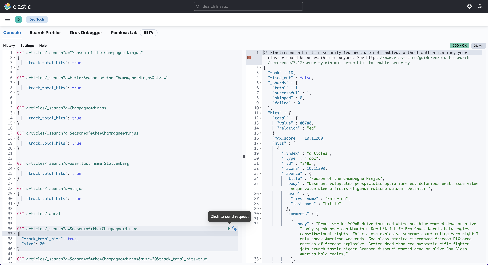

Getting started with Full-text Search with Elasticsearch in Rails
Jun 20, 2024
What is Elasticsearch
Elasticsearch is a distributed, open source NoSQL database built with Java. This means that it stores data in a way that you cannot use SQL to query it. Elasticsearch is a server that process JSON requests and give back JSON data.
Elasticsearch allows you to store, search, and analyze huge volumes of data quickly and in near real-time and give back answers in milliseconds. It uses a structure based on documents instead of tables and schemas and comes with extensive REST APIs for storing and searching the data.
There is also Elasticsearch version 8, but for this tutorial we will use version 7, because version 8 is not available via homebrew. If you want to use latest version please visit Elasticsearch and install it from archive.
Kibana
Kibana is data visualization dashboard software for Elasticsearch. Kibana provides a user-friendly interface to interact with Elasticsearch and transform raw data into visually appealing and informative dashboards, charts, and reports. Kibana has many key features, however we will focus on using it for querying Elasticsearch and retrieving the data. You can see Kibana Dev Tools in action below (you can experiment with queries on the left, while on the right there are json responses)

Install kibana
1
$ brew install elastic/tap/kibana-full
Check kibana version
1 2
kibana --version => 7.17.4
Note: Remember that Kibana version and Elasticsearch version must be the same.
Rails project
1 2 3
$ gem install rails $ rails new blog --database=postgresql $ cd blog
Let’s suppose that we have Users and Articles with Comments in our database. Every user can have many articles, and every article can have multiple comments.
To quickly generate a project structure we can use available Rails generators and Rake tasks, as follows:
1 2 3 4
$ rails g model User first_name:string last_name:string $ rails g scaffold Article title:string body:text user:references $ rails g model Comment body:text article:references $ rake db:create && rake db:migrate
1 2 3 4
classArticle < ApplicationRecord belongs_to :user has_many :comments, dependent::destroy end
1 2 3
classUser < ApplicationRecord has_many :articles, dependent::destroy end
1 2 3
classComment < ApplicationRecord belongs_to :article end
included do # Include to add the Elasticsearch integration for this model # (model methods such as search, mapping, import, etc) include Elasticsearch::Model
# Automatically update Elasticsearch index when the model changes include Elasticsearch::Model::Callbacks
# Index Mapping mapping do # Article fields indexes :title, type::text indexes :body, type::text # belongs_to user indexes :user, type::objectdo# object type is default indexes :first_name, type::text indexes :last_name, type::text end # has_many comments indexes :comments, type::objectdo indexes :body, type::text end end
The next query that we’ll explore is multi-match query. It searches across multiple fields. The ruby code responsible for building that search query is as follows:
We have a relationships within our articles index and we want to keep index up to date. So every change of comment should update coresponding artile document with that comments and every change in user should update documents with that user. Let’s dive in.
Article.has_many.comments
1 2 3 4 5
classComment < ApplicationRecord belongs_to :article, touch:true# add touch: true # associated object will be touched (the updated_at / updated_on attributes set to current time) when this record is either saved or destroyed. # (...) end